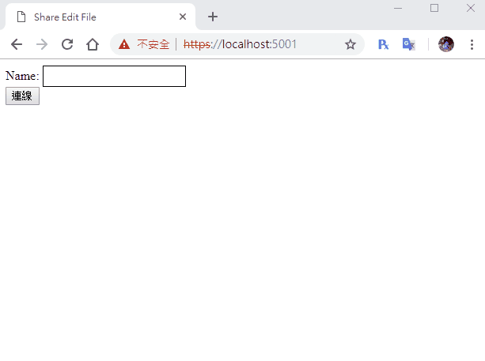

[鐵人賽Day26] 實作Web即時共同編輯文件 (6) - 新增登錄畫面及選擇文件列表
文章目錄
今天我們要來做自訂表格內容和連線列表，既然建立表格的方法都訂好了，當然要能從前端建立啊!XD
各畫面區塊建立
這次我想做4個畫面登入畫面、文件選擇畫面、文件建立表單、文件編輯畫面，首先把div區塊做出來
<!-- 登入畫面 -->
<div id="loginDiv">
</div>
<!-- 文件選擇畫面 -->
<div id="fileListDiv" style="display:none">
</div>
<!-- 文件編輯畫面 -->
<div id="fileDiv" style="display:none">
<div class="onlineList" id="onlineList">
</div>
<hr>
<table id="table">
</table>
</div>
<!-- 文件建立表單 -->
<div id="createFileDiv" style="display:none">
</div>
然後先建立個區塊DOM物件變數
var loginDiv = document.getElementById('loginDiv');
var fileListDiv = document.getElementById('fileListDiv');
var fileDiv = document.getElementById('fileDiv');
var createFileDiv = document.getElementById('createFileDiv');
登入畫面建立
首先我們先做登錄畫面，登入畫面只需要輸入名稱就行，因為我們沒做資料庫，不需要帳號密碼XD
Name:
<input id="name" type="text" class="input">
<br>
<button id="connectBtn" type="button">連線</button>
還有因為把input改成透明了，所以名稱這邊要給他樣式，不然看不到
.input{
background: white;
border: 1px solid;
}
取得button物件和名稱變數name，name用來儲存名字使用
var connectBtn = document.getElementById('connectBtn');
var name = '';
登入後跟Serve開始連線，也就是說之前的連線事件要放進button的onclick事件裡面，然後先切換區塊及儲存名字，在開始連線
connectBtn.addEventListener('click', function () {
// 切換成文件選擇畫面
loginDiv.style.display = 'none';
fileListDiv.style.display = '';
// 儲存名字
name = document.getElementById('name').value;
// 連接事件
connection.start()
.then(function () {
connection.invoke('GetFile', LoadFile).catch(function (err) {
return console.error(err.toString());
});
})
.catch(function (err) {
return console.error(err.toString());
});
});
註：原本的
connection.start()記得刪除
連線文件列表建立
我們一樣建立一個select元素當列表，一樣記得給他multiple屬性，上面放建立文件的button，下面放選擇文件的button
<button id="goCreateFileBtn" type="button">建立新文件</button>
<br>
<select id="fileList" multiple>
</select>
<br>
<button id="getFileBtn" type="button">選擇文件</button>
載入DOM
var getFileBtn = document.getElementById('getFileBtn');
var fileList = document.getElementById('fileList');
var goCreateFileBtn = document.getElementById('goCreateFileBtn');
再來到FileService建立取得所有文件的方法GetFileList
public List<FileModel> GetFileList()
{
return list;
}
然後到FileHub也新增取得所有文件的方法GetFileList，注意回傳給呼叫的User就好，傳送回去的方法叫做ReceiveFileList
public async Task GetFileList()
{
await Clients.Caller.SendAsync("ReceiveFileList", _service.GetFileList());
}
回前端的連線connectBtn的click事件從GetFile改成GetFileList，然後傳回的變數LoadFile刪除。
connection.start()
.then(function () {
connection.invoke('GetFileList').catch(function (err) {
return console.error(err.toString());
});
})
.catch(function (err) {
return console.error(err.toString());
}
最後得到資料後，把資料填入select列表內
connection.on("ReceiveFileList", function (fileListDate) {
// 清空列表
fileList.innerHTML = '';
// 建立列表
for (var i = 0; i < fileListDate.length; i++) {
var option = document.createElement('option');
option.innerHTML = fileListDate[i].filename;
fileList.appendChild(option);
}
});
DEMO

今天就這些，明天來完成最後的部分